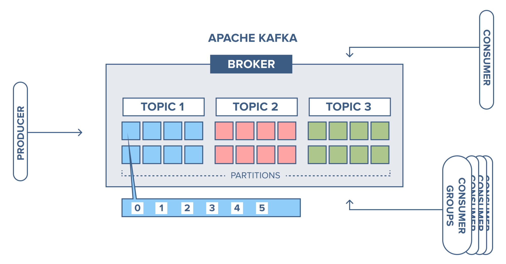

Kafka is the most popular message queue in today's world
It works over TCP
Here you can see how it is structured

So, what are partitions, topics, producer, consumer and consumer groups ?
- Producer - services that publishes messages to the broker
- Topic - category, or folder, or any analogy you can come up with, it is more logical unit that helps us to separate messages
- Partitions - every topic may be distributed across different nodes, those distributed units are called partitions
- Consumer and consumer group - those are services that are going to consume messages, the main difference is
If two consumers have subscribed to the same topic and are present in the same consumer group, then these two consumers would be assigned a different set of partitions and none of these two consumers would receive the same messages.